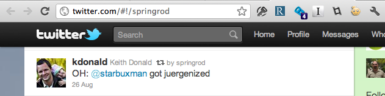

Getting Involved with Spring 101
Chris Beams
SpringSource, VMware
Chris Beams
- Committer, core Spring Framework
goals
- broad overview
- getting involved today
- sneak preview of next gen processes
the spring landscape today
what is Spring?
a framework?
a collection of projects?
a community?
Yes.
spring-framework
spring-frameworkspring-integrationspring-batchspring-data-*spring-roospring-webflowspring-socialspring-amqpspring-hadoop

many projects, one goal:
provide infrastructural support for enterprise applications
(and there's a lot of infrastructure out there)
many projects, common resources.
springsource.org
- completely redesigned
issue tracking
source control
continuous integration
quality control
artifact management
- Maven Central
- search.maven.org
- SpringSource S3 maven repositories
- (more on all that in a bit)
forums
how we manage our projects
"benevolent dictator" model
- relatively small teams
- strong leadership
- community input
how we design
- deep subject matter expertise
- internal peer review
- feedback from R&D, consultants, sales engineers
- distilling jira issues, forum posts
- conservative releases
- solve for real-world problems
how we test
- proper unit testing, integration testing
- use by other project teams
- use by our engineers in the field
- feedback from users against milestones and RCs
who commits
- meritocracy
- typically employees
- typically strong users we've hired
- increasing number of external committers
how we release
snapshot->milestone->RC->GA- relatively long release cycles
- plenty of feedback
- mostly successful model over time
every project is a little different
every project is a little different
- share process where it makes sense
- but do what's right for each team
- build systems are a good example
Example
spring-frameworkissue management
Managing SPR JIRA
- https://jira.springsource.org/browse/SPR
- 8800+ issues
- Daily triage
- Backlog versions
</overview>
----------------------------
ways to get involved
ways to get involved
- Use the projects!
- Report issues
- Help other users
- Track and test latest features
- Participate in user groups
- Contribute code and other fixes
first things first
- using Spring projects
quick start
- (for the impatient)
demo
- STS template projects
read the documentation
grab the artifacts
- via distribution zips http://www.springsource.com/download/community
- via Maven Central (preferred) http://search.maven.org
learn from samples and reference applications
reference applications
- greenhouse
- live app http://greenhouse.springsource.org
- home http://www.springsource.org/greenhouse
- code https://github.com/SpringSource/greenhouse
Spring Roo
- http://www.springsource.org/spring-roo
- rapid application development
- Spring best practices built in
tutorials
stay informed
blogs
- team blog http://blog.springsource.org
- news feed http://springsource.org
- RSS for both
report issues
improvements & new features
- share use cases
- vote!
bugs
- steps to reproduce are critcal
- but reproduction projects get you ♥
repro projects
- simple as possible
- self-contained
- built with Maven or Gradle
spring-framework-issues
- https://github.com/SpringSource/spring-framework-issues
- repro projects, streamlined
- especially helpful for web application issues
help other users
- (and get help when you need it too)
forum.springsource.org
- thousands of users
- great way to build a presence in the community

track and test the latest features
snapshots, milestones, RCs
- http://maven.springframework.org/snapshot
- http://maven.springframework.org/milestone
- http://maven.springframework.org/release
- all based on Amazon S3
- resolvable from Maven
- but not browseable
- http://shrub.appspot.com
participate in user groups
- google for 'spring user group' in your area
- java user groups often have spring content
- if they don't, consider giving a talk!
- interested in starting a group?
- contact
afitzgerald@vmware.com
contribute code and other fixes
first: why contribute?
- scratch your own itch
- get to know Spring really well
- improve your skills
- street cred, yo.
demo
- contributor attribution in git projects
kinds of contribution
- typo fixes, documentation, cosmetic
- minor bug fixes and improvements
- major stuff
how to do it
- and what to expect
the small stuff
- typo? doco?
- just submit a patch or pull request
- (we'll talk about pull requests shortly)
the bigger stuff
it's about communication
- create/comment on the issue
- express interest, start a conversation
- discuss possible implementations
- build trust
study previous patches and pull requests
- what kinds of submissions have been accepted before?
- code quality, formatting, etc
demo
spring-integrationpull requests- https://github.com/SpringSource/spring-integration/pulls
- https://github.com/SpringSource/spring-integration/pull/153
grab the source
$ svn checkout https://github.com/cbeams/spring-framework.git
...
$ git clone https://github.com/cbeams/spring-framework.git
...
git || svn
git && svn
- GitHub supports both!
- https://github.com/blog/966-improved-subversion-client-support
- your choice
look at the commit log
- plan to emulate it
demo
spring-frameworkcommit log- http://progit.org/book/ch5-2.html#commit_guidelines
get to know the project build system
- Ant ("spring-build")
- Gradle ("spring-build-gradle")
- Maven (individual to each project)
- S2 team blog: building Spring 3
give it a shot!
- stay in communication with project team
- not every contribution will necessarily make it
- process should be rewarding in any case
(and don't forget tests!)
in any case
- expect your code to be changed
"Juergenization"

- 
legal stuff
- You may be asked to sign our CLA
- SpringSource Contributor License Agreement
contributing through external projects
- Example: Spring Social core & Spring Social Foursquare
- https://github.com/springsource/spring-social
- https://github.com/mattupstate/spring-social-foursquare
----------------------------
sneak preview
- getting involved 2.0
source control improvements
- everything on GitHub
pull requests are...
the new patch
the new code review
demo
- pull request / fork and edit
next steps
- complete the migration of projects
spring-frameworkpost 3.1 GA- only a few remaining after that
integrate pull requests into our JIRA workflow
improved artifact management
- Artifactory
- http://repo.springsource.org
demo: repo.springsource.org
- unified search
- put a watch on anytihng
- license information
- transitive resolution
- migration path from s3 repos
streamline CLA process
- deep integration via GitHub hooks API
- CLA database
- revised CLA agreement, web-only form
Thanks!
@cbeams- this presentation on the web: http://cbeams.github.com/spring-community-101